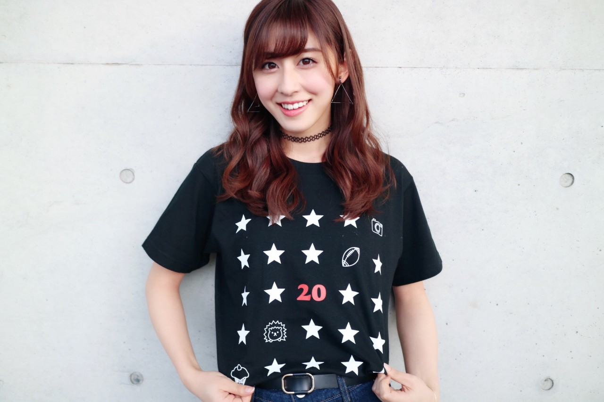
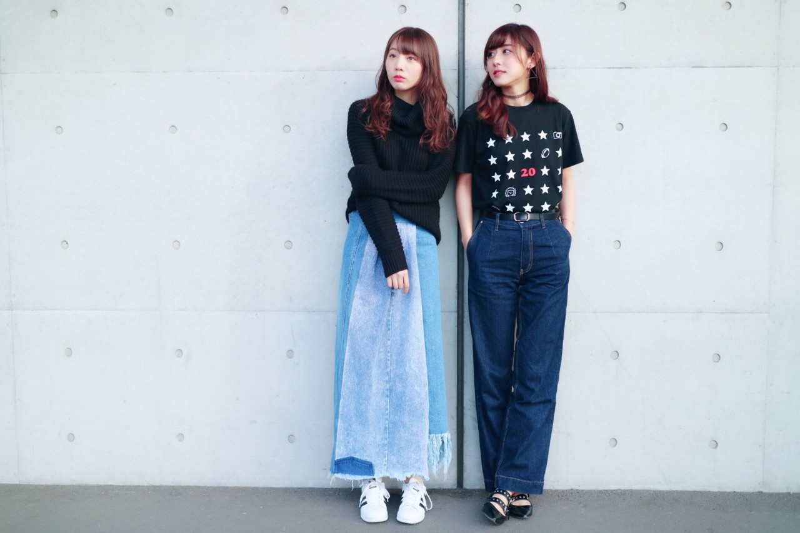
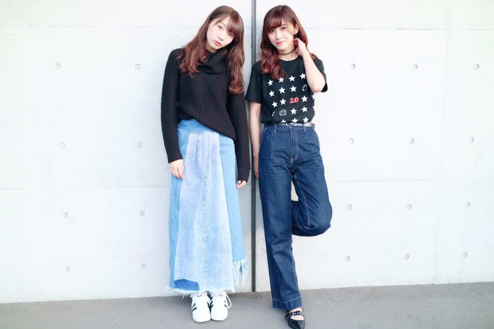
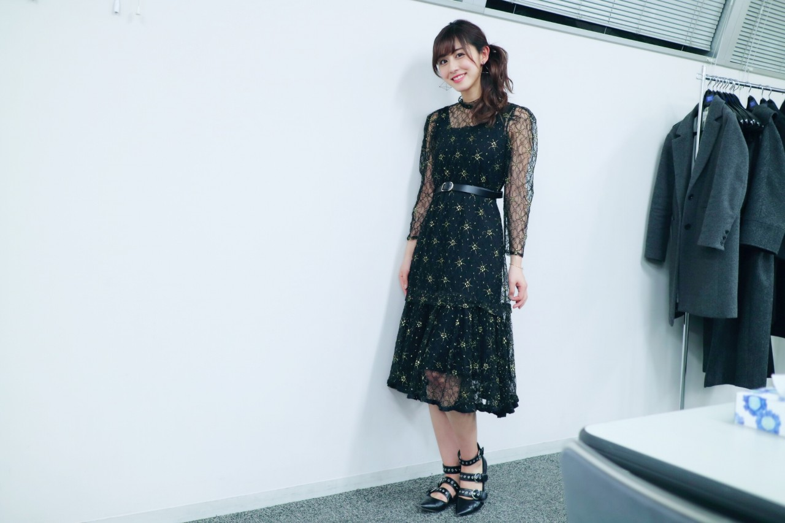

| 2017/03 05 Sun | 斎藤ちはる Tシャツとワンピース |
今日はあったかかったですね〜
朝早くは寒くてガクブルだったけど
昼間とか薄着でも全然平気なくらい！！
春がもうすぐそこに\( ˆoˆ )/
うれしい！
昨日の握手会の服装ですっ
#chihaOOTD
4部、生誕祭

生誕Tシャツを着ました！
お気に入りのデザイン。
意外と普段も着られそう◎
着てみてね( ¨̮ )笑

おしゃれ雑誌風...！だけど
2人とも全然系統も違うし
私なんてただのTシャツ。笑
どんな雑誌だろうねって愛未と笑ってました。

沢山撮ったけどこちらもキメキメ！
(特に私が...笑)
ちなみに！
denim : MILLER
shoes : ZARA
合わせやすい万能デニムと、
歩きやすい万能シューズです。
5部

生誕祭の日ということで
普段はなかなか着ない、ワンピース！
よく見ると刺繍の糸にラメが入っていて
近くで見るとキラキラなんだよ〜☺︎
気付いてくれた方も多くて嬉しかった〜
実はこのワンピース、
叔母が昔着ていたものなの！
だからさりげなく肩がバブリーでしょう(｡･o･｡)ﾉ笑笑
ずっと着たかったから着られてよかった♡
髪型はサイドポニーっていうのかな、
片方にボリュームのあるスタイルにしました！
髪の毛の下半分だけを耳の下あたりで
まとめてからくるりんぱして、
上半分を耳の横や上あたりでピンで留めて
その上半分の毛束を逆毛立てて
全体的にボリューム出しました！
こんな風にメイクさんがやってくれました〜
自分でやった風に言ってしまったけど！笑
しかも全然伝わらないと思う(> <)笑
でも良かったら真似してみてね◎
普通のサイドポニーよりは上級派かも〜
------------------------------------------------♡
♬ ChihaMusic
「milk tea」清水翔太さん
クセのある優しい歌声と
甘い歌詞がぴったり！
聞いていて心地良く思える曲です。
お互いをミルクティーに例えるって
なんてオシャレなんだ〜
"君が好きな僕で在りたいから
僕が好きな君で在り続けて"
この部分とか素敵！
なんて美しくて和やかなんだろう
頻繁に聴きたくなる好きな歌。
今日の乃木のの聴いてくれた皆さん
ありがとうございました〜☺︎
まいちゅんについてのコーナーやりたいな笑
楽しかった！！笑
アンダー曲も解禁でしたが...
皆さん如何でしたでしょうか( ¨̮ )( ¨̮ )( ¨̮ )
早くフルサイズを聞いてほしい〜
MVも見て欲しい〜
まだまだお楽しみに...♡
おやすみ
斎藤ちはる